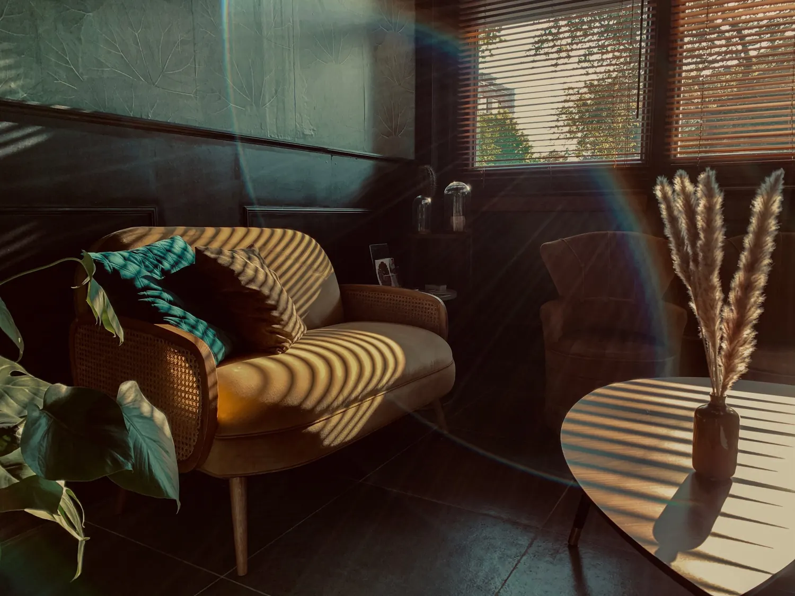
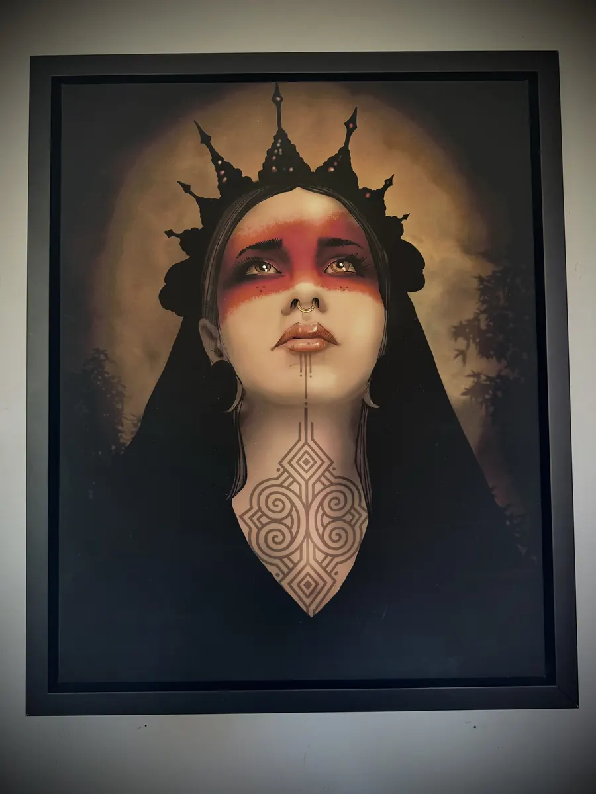
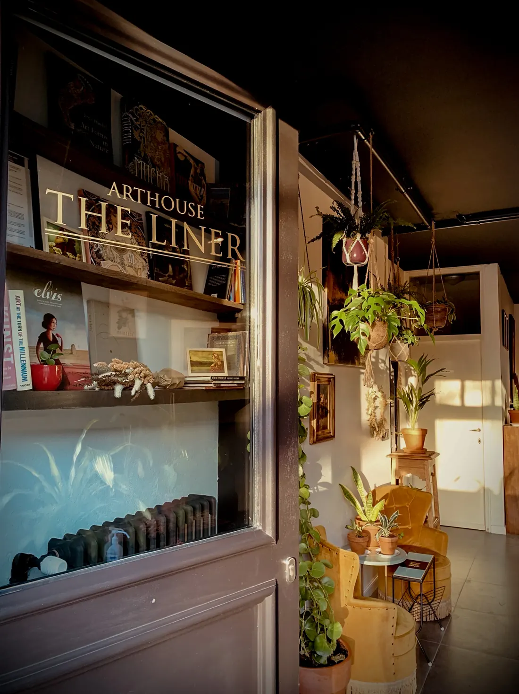
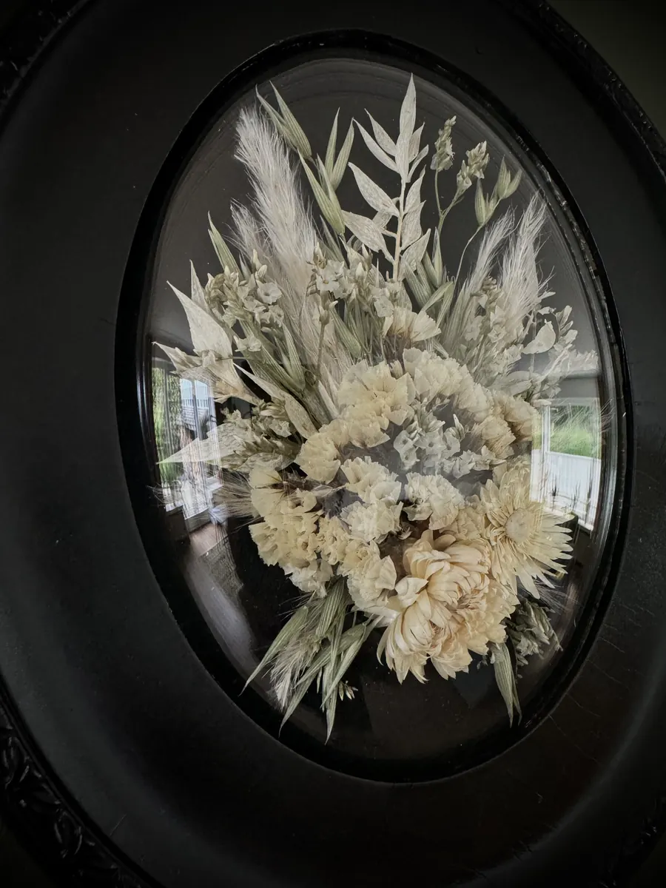
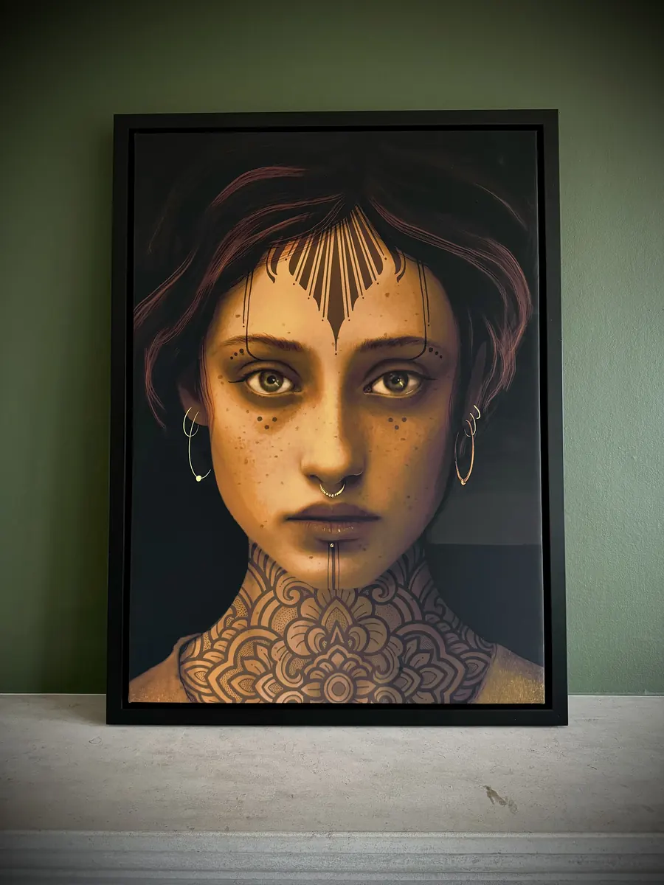
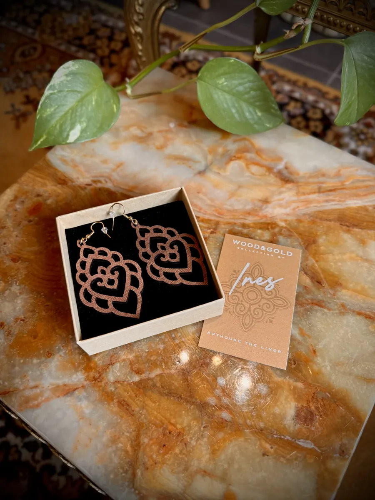
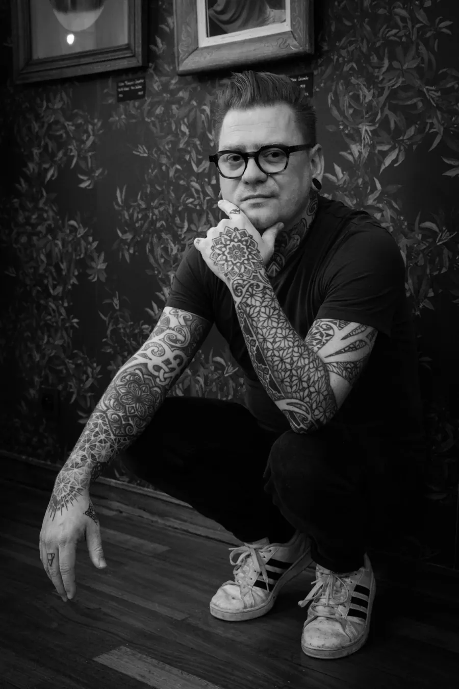
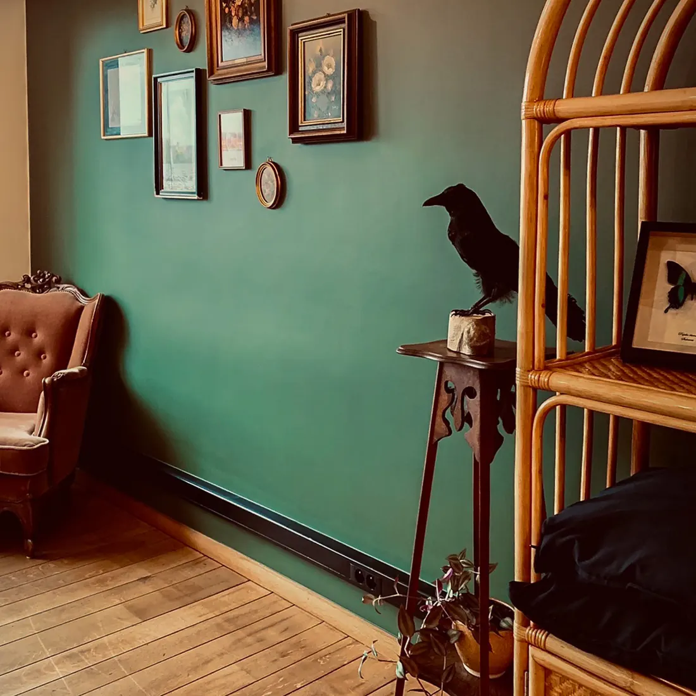

Tattoo arthouse · enkel op afspraak
Kunst om in te leven.
Dagmar en Ines tekenen elke tattoo op maat, voor jouw lijf en niemand anders. Ornamental, poetic, fine line en dotwork, in een huis vol kunst waar je je meteen thuis voelt.
5,0 op Google uit 87 reviews




5,0
87 reviews op Google
Uit het arthouse
Lijnen die de vorm van je lichaam volgen.
Van een eerste kleine tattoo tot een volledige sleeve of backpiece. En wat niet op de huid past, hangt aan de muur of draag je rond je hals.




Elk ontwerp begint bij jouw verhaal.
Vertel het ons5,0
Gemiddeld uit 87 reviews op Google. Klanten hebben het over fijn werk, veel geduld en een huis waar je je meteen thuis voelt.

Dagmartatoeëert sinds 2006Inesfine line en dotwork
Vandaag mijn allereerste tattoo laten zetten door Ines. Ik ging met wat schrik, maar ze stelde me meteen helemaal gerust. Zo fijn, zo gedetailleerd, zo mooi. Duizendmaal dank ❤️
Een van de beste ervaringen die ik ooit had. Proper, professioneel en een rustige sfeer. Mijn tattoo werd door Dagmar uit de vrije hand gezet, ik ben nog altijd onder de indruk van het resultaat.
The Liner is een topadres voor je eerste of je volgende tattoo. Naast het prachtige interieur, vol kunstwerken van Ines en Dagmar, zijn ze ook echt uitzonderlijk goed in tatoeëren.
Custom made, nooit uit een mapEnkel op afspraakPrivéparking naast de studio
Afspraak
Vertel ons je idee.
Beschrijf wat je in gedachten hebt, ongeveer hoe groot en waar op je lichaam. Een paar referentiebeelden helpen, je tattoo wordt toch van nul getekend.
Het arthouseHandelsstraat 76, 8800 Roeselare
Route plannen

Privéparkingvlak naast de studio